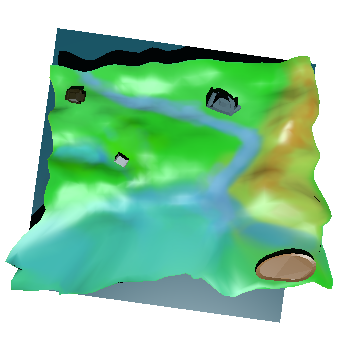

Map Of The Kingdom

By the way, if you'd like to see a micro journey through the Therma River upstream, there is video of rendered map.
By the way, if you'd like to see a micro journey through the Therma River upstream, there is video of rendered map.